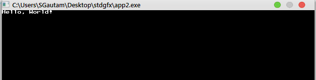

Welcome to the stdGFX documentation page! This HTML page servers as a reference to the stdGFX library. A lot of effort has been ensured to make the documentation as error-free as possible. If errors still persist in this documentation, don't hesistate to contact the project developer! The documentation is hand-written, so don't expect it to be perfect nor to be completely killed by mechanization!
This project aims to accomplish what the C standard never did, or never bothered to. The standard C library,
has quite a lot of features but is still lacking when it comes to handling graphical tasks. A programmer is then
forced to use one of several libraries (SDL, OpenGL, Qt, ...) to name a few. This may not be a very difficult task
for an experienced programmer, but for beginners, it is quite offputting. stdgfx aims to fix that. Programs immediately
launch into graphical mode (rather than setting the mode manually) as the main function is replaced by the gfx analogue
gfx_main. The library aims to be simplistic, and provide features that are basic but essential.
Currently, of course, the library has been implemented as a frontend for SDL. The project is still in the proof of concept stage,
and massive changes might still just be underway.
A graphical "Hello World" example is as follows:
int gfx_main(int argc, char** argv)
{
gfx_printf("Hello, World!\n");
return 0;
}
The output is done through a standard 8 x 8 bitmap font, an exampe on a Windows 7 system is shown:

description: if test evaluates to 1, shutdown, and exit with EXIT_FAILURE, printing message given by fmt to stderr otherwise returnvoid gfx_ok(int test, const char* fmt, ...);
description: resize the output window to a newer resolution given by w x h x bppvoid gfx_resize(int w, int h, int bpp);
uint32_t gfx_color(int r, int g, int b, int a);description: Return a 32-bit color value constructed from the Red, Green, Blue and alpha channel. This 32-bit value must be of the same format as the native framebuffer